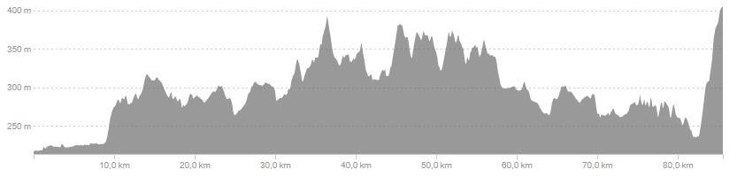
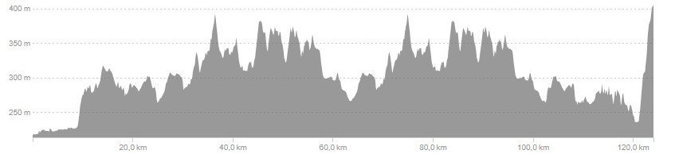

Parcours : 86km et 124km
Direction le sud de la région, vers la Colline de Sion qui sera simplement contournée cette année.
Passage devant le Château de Thorey Lyautey.
Ravitaillement à Vandeléville.
Le grand parcours fera une boucle supplémentaire.
Parcours vallonné et exigeant.
Le retour s’effectuera en passant par de jolies routes et une dernière difficulté pour une arrivée au Fort Pélissier de Bainville sur Madon.
Parcours randonnée découverte libre : 66km
Début de parcours identique aux parcours chronométrés.
Puis retour par Thorey Lyautey.
Parcours bucolique.
Jolies route de campagne.
Ravitaillement à Vandéléville.
Le Parcours

Petit Parcours
Strava petit parcours

Grand Parcours
Strava grand parcours

Parcours Rando Découverte
Strava parcours découverte